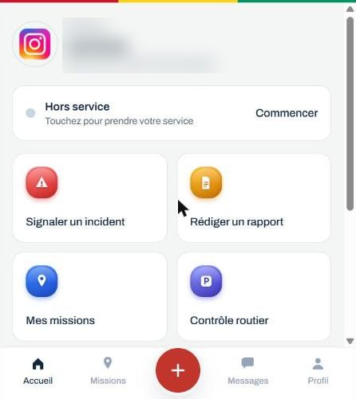

En développement
Commune Connect
Plateforme municipale · Garde communale de Conakry
Application multi-rôles pour gérer et suivre les interventions de la Garde communale : agents de terrain, chefs de brigade, responsables HSE et vice-maire/maire.
ReactViteTailwindSupabaseCapacitor
- 11 modules : rapports, incidents, stationnement, patrouilles, équipements, présence, statistiques, carte…
- Architecture multi-communes, vraie authentification et connexion biométrique
- Messagerie en temps réel et météo locale
- Version web et application mobile native
- Présentation prévue auprès des communes